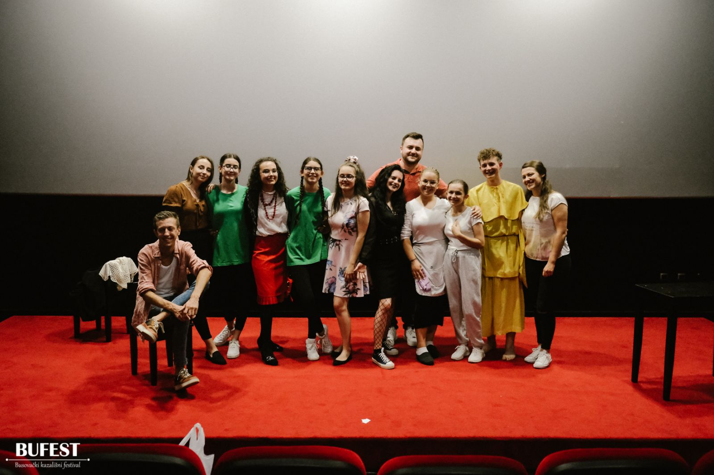

Kultura


Kulturom i njenim sadržajima u Busovači se bave javne ustanove, nevladine organizacije, odnosno
udruženja građana i pojedinci.
Ako se posmatraju ukupni rezultati u oblasti kulture onda se sa sigurnošću može konstatovati da su
nosioci kulturnih događanja na ovim prostorima HKD „Napredak“ – Podružnica Busovača, BZK
„Preporod“ Busovača, JU Gradska biblioteka, Osnovna glazbena škola „Jakov Gotovac“, Kino
„Theatre” Busovača, Udruga „Uzor” i AmfiTeatar Busovača.
Posjeduje preko 16.000 naslova, i ima preko 600 stalnih čitalaca, kako mladih učenika i studenata (oko 60%), tako i onih iz populacije starijih. Također, Gradska biblioteka vrlo često realizuje zanimljive projekte kako sa najmlađim čitaocima, tako i sa onima starijim.
NAPREDAK
HKD „Napredak“, čiji je rad Podružnice u Busovači obnovljen 1991. godine, danas sa mnogo uspjeha organizuje Međunarodnu smotru folklora Srce Središnje Bosne, nastupe tamburaša, izvornih grupa, književne večeri, Lipanjske dane kulture i Božične dane kulture. Od 1994. godine, neprekidno, ovo društvo organizuje dječji festival „MAK“ (Mali akordi) gdje najmlađi imaju priliku pokazati svoj pjevački talent. Folklorni sastav Hrvatskog kulturnog društva „Napredak” Busovača, 2015. godine dočekao je i ispratio Papu Franju na sarajevskom aerodromu, što je svakako velika čast i privilegija.
BZK „PREPOROD” BUSOVAČA
Bošnjačka zajednica kulture „Preporod“ Busovača sa sjedištem u Kaćunima osnovana je
10.04.2008. godine kao neprofitna organizacija koja opstaje zahvaljujući volonterskom radu.
Djeluje kroz rad više sekcija: likovna sekcija, hor, sekcija vokalnih solista, dramska i folklorna
sekcija koja je ujedno i najbrojnija, te sekcija žena.
Bošnjačka zajednica kulture „Preporod“ Busovača broji oko 200 aktivnih članova, te veliki broj
simpatizera. Do sada su učestvovali na mnogobrojnim manifestacijama širom Bosne i Hercegovine, ali i
izvan granica naše zemlje, a i sami su organizovali neke od manifestacija.
U proteklom periodu svake godine organizovali su već tradicionalnu Međunarodnu smotru folklora
pod nazivom „Bogatstvo različitosti“, što će biti obaveza i u narednom periodu. Na tim smotrama imali su
priliku da ugoste društva iz cijele Bosne i Hercegovine, kao i društva iz drugih država, među kojima i ona
iz Crne Gore, Austrije, Slovenije, Hrvatske, Turske…Na jednoj od smotri specijalni gosti bili su članovi
Folklornog ansambla Turske radio-televizije, kao najveći i napriznatiji ansambl ovog karaktera u Turskoj.
Jedna od manifestacija koju organizuju i koju sa ponosom ističu jeste već tradicionalna Večer
sevdaha koja se održava svake godine prve subote u mjesecu decembru. Neizostavni učesnici ove
manifestacije su i široj javnosti poznata estradna imena: Sejo Pitić, Hasiba Agić, Nedžad Imamović....koji
sa oduševljenjem prate naš rad i rado se odazivaju našim pozivima.
Inače, članovi BZK „Preporod“ Busovača rado odlaze kao gosti i učesnici humanitarnih akcija širom
Bosne i Hercegovine, od kojih izdvajaju: Bihać, Jajce, Tuzla, Travnik, Jablanica….
Potrebno je naglasiti da su članovi BZK „Preporod“ Busovača rado viđeni i uvijek pozivani gosti na
smotrama folklora i narodnog stvaralaštva, kako u Bosni i Hercegovini (Ključ, Sanica, Konjic, Jablanica,
Travnik, Tuzla, Bivolje Brdo-Čapljina, Srebrenik, Tešanj, Bihać, Doboj, Zenica, Jajce….), tako i izvan
granica Bosne i Hercegovine (Hrvatska, Austrija, Slovenija, Makedonija).
Takođe, svake godine prigodnim programom obilježavaju Dan nezavisnosti BiH i Dan državnosti
BiH i tom prilikom ugoste društva iz susjednih država (KUD „Mali vrh“ Kranj, Slovenija, KUD
„Sevdah“ Zagreb, Hrvatska, KUD „DEM“ Ljubljana, Slovenija, itd.).
U svrhu stručnog usavršavanja i „proizvodnje“ vlastitih kadrova, svake godine određeni broj
članova BZK „Preporod“ Busovača pohađa seminare iz koreografije, koji su predmet obrade igara iz
cijele bivše Jugoslavije.
Jedna od neizostavnih aktivnosti je i promocija knjiga, ne samo autora sa područja općine Busovača
već i šire, po čemu smo već postali prepoznatljivi.
Za rezultate postignute u dosadašnjem radu BZK „Preporod“ Busovača je već postala dobitnik
priznanja različitog ranga.
Priča kina „Theatre“ počinje u januaru 2008. godine. Upravo tada su počeli radovi na kino dvorani i nakon samo jedanaest mjeseci posjetioci su mogli pogledati prvu filmsku projekciju. 13.12.2008. godine, upriličena je prva filmska projekcija, a radilo se o filmu iz serijala James Bond – Zrno utjehe. Sama svečanost otvorenja kino dvorane održala se 17.12.2008. godine. Zahvaljujući Vladi Republike Hrvatske digitalizovana je kino dvorana nakon čega je kino „Theatre“ postalo 100% konkurentno na bh. tržištu kino-filmske produkcije. Na ovaj način kontinuirano prikazuje sve aktualne filmove što je odlična prilika da publika svih generacija uživa u najboljim domaćim, regionalnim i svjetskim filmskim ostvarenima. Pored redovnih filmskih projekcija, kino „Theatre“ vrlo aktivno radi kao multifunkcionalna dvorana za održavanje raznih predstava, promocija knjiga, projekcija domaćih filmova, književnih večeri, koncerata, itd.
UDRUGA UZOR

Udruga UZOR je nevladina organizacija koja za cilj ima pozitivno uticati na razvoj Busovače, centralne Bosne i Bosne i Hercegovine u cjelini. Provodi brojne projekte jačajući razvoj Busovače u privrednom, kulturnom, sportskom i informativnom smislu. Kroz svoje aktivnosti stvara mlade lidere 21. vijeka. Podržava mlade u razvoju i uči ih da preuzmu inicijativu. Osim navedenoga, ima i važnu ulogu u kreiranju kulturnog establišmenta u Busovači. Ekipu udruge UZOR predvodi u ulozi predsjednika Dario Plavčić, a tu su još Bojan Petrović, u ulozi projekt menadžera, Nikolina Batista – projekt koordinator, Maja Petrović – omladinska radnica, Danijela Trogrlić – profesorica njemačkog, Manuela Kvesić – profesorica engleskog, Marko Mirković – profesor glume i Marija Čalić – voditeljica dječjih aktivnosti. Kada je riječ o projektima iz oblasti kulture Udruga Uzor ima stalnu aktivnost proba iz oblasti drame i teatra, a rezultat istih su predstave za djecu i odrasle u režiji voditelja radionica i glumca Marka Mirkovića.
AMFITEATAR BUSOVAČA
Udruženje za promociju i razvoj kulture “AmfiTeatar” Busovača osnovano je s ciljem afirmiranja i promocije kulturnih aktivnosti na području općine Busovača, ali i na području cijele Centralne Bosne i Hercegovine. Prije formalnog osnivanja, sadašnji članovi, poslije inicijatori osnivanja AmfiTeatra, realizovali su značajan broj projekata zbog čega se ukazala potreba za formalnim osnivanje udruženja koje će se, između ostalog, baviti organizovanjem različitih kulturno – zabavnih događaja u dva amfiteatra i to u Kaćunima i u Busovači. Pošto su amfiteatri izgrađeni inicijativom Osnovne škole Kaćuni, isti se koriste prevashodno kao učionice na otvorenom, ali i kao mjesto na kojem se može realizovati bilo koji sadržaj kulturno – zabavnog tipa. Prvi projekat AmfiTeatra bio je Festival kulture, prvi festival ovog tipa na otvorenom u Busovači koji je realizovan u mjesecu julu 2021. godine. Festival je održan u novoizgrađenom amfiteatru u Busovači i isti je trajao četiri noći. Cilj je da ovaj festival postane tradicionalan, a da busovačka publika svake godine uživa u najboljim regionalnim teatarskim predstavama, ali i u najboljim koncertima domaćih i regionalnih bendova. AmfiTeatar Busovača trenutno u svojoj produkciji ima omladinsku predstavu “Nismo svi iz ljubavi” u kojoj aktivno učestvuje 15 mladih ljudi iz Busovače. Osim teatarskih sadržaja, AmfiTeatar realizuje i filmske projekte, te je u 2021. godini produciran dokumentarni film 650 godina Busovače, kao i dokumentarno – igrani film “Bez glasa” u svojstvu koproducenta.